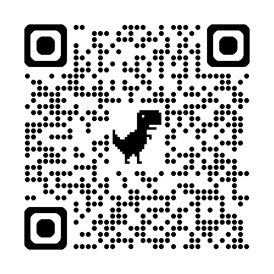

Taller Cyber-Ops Nivel 2
Monitoreo Avanzado, Wireshark y Gobernanza de Incidentes
[+] Ya hackeamos las capas. Ahora aprenderemos a auditar el tráfico en tiempo real.
Iniciando Protocolos de Conexión
Antes de desplegar nuestras herramientas forenses en la consola, necesitamos sintonizar la frecuencia del escuadrón.
- Himno Cyber-Ops: Disfruta de la producción audiovisual oficial de nuestro entrenamiento mientras los Squads terminan de configurar sus terminales tácticas.
- Alineación Lógica: Observa las secuencias del video; la velocidad y la precisión técnica serán vitales para resolver los desafíos que vienen.
> [ESTADO]: REPRODUCIENDO MEDIA LOCAL... OK
Control del Direccionamiento Lógico
En la clase anterior vimos cómo las tramas y paquetes contienen identificadores. Ahora dividamos el alcance de nuestras IPs:
- IP Privada: Tu identidad local regulada por tu router de casa/escuela (Rangos 192.168.x.x, 10.x.x.x). Invisible desde el exterior.
- IP Pública: La cara visible de toda tu red en Internet asignada por el ISP. Todo el tráfico mundial te identifica aquí.
💡 Enfoque Cyber-Ops: El Escudo NAT de IPv4 oculta tu IP privada. Pero en IPv6 todo cambia... cada dispositivo expone una IP pública global única.
> status: ACTIVE
> [INTERNAL_LAN]: 192.168.1.105
> [NAT_TRANSLATION_ROUTER]: ENFORCED
> [EXTERNAL_WAN_IP]: 201.54.12.89
[!] Tráfico saliente firmado con IP Pública
Anatomía de IPv4 y Máscaras de Red
En el nivel anterior vimos que los routers leen direcciones binarias. IPv4 utiliza un espacio lógico estructurado de 32 bits divididos en 4 octetos.
- Identidad de Red (Network ID): La primera parte de la dirección que identifica a qué segmento físico o subred pertenece el equipo.
- Identidad de Host (Host ID): La parte final que identifica el dispositivo específico dentro de esa subred.
💡 Nota del Analista: La Máscara de Red (Ej: 255.255.255.0) le indica a los enrutadores exactamente dónde termina la red y dónde empieza el host.
> Dirección IP: 192.168.1.50
> Binario: 11000000.10101000.00000001.00110010
> Máscara : 255.255.255.0 (/24)
> [NETWORK_BITS]: 11000000.10101000.00000001 (Fijo)
> [HOST_BITS] : 00110010 (Asignable a PC)
Clases de Direcciones IPv4 y Rangos
Para organizar el tráfico mundial en los años 80, la infraestructura global dividió las direcciones en clases según el tamaño de la organización:
Clase A (Grandes Redes)
Rango: 1.0.0.0 a 127.255.255.255
Usa el 1er octeto para red y 3 para hosts. Permite hasta 16 millones de equipos por red. (Ej: Proveedores globales, Gobiernos).
Clase B (Medianas)
Rango: 128.0.0.0 a 191.255.255.255
Usa los 2 primeros octetos para red. Diseñada para grandes universidades o corporaciones de alcance internacional.
Clase C (Pequeñas)
Rango: 192.0.0.0 a 223.255.255.255
Usa 3 octetos para red y solo 1 para hosts. Soporta 254 dispositivos. Es el estándar de redes domésticas y laboratorios locales.
> Clase D Multicast: 224.0.0.1
> Tráfico de enrutamiento OSPF / RIP
> Red de Pruebas Loopback: 127.0.0.1
> Diagnóstico interno: ping localhost
> Direcciones Privadas Clase C: 192.168.1.0/24
Direcciones Reservadas y Clases Especiales
No todas las direcciones IP están disponibles para asignarse a computadoras comunes en la web. Existen entornos críticos aislados:
- Clase D (Multicast): Rango 224.0.0.0 a 239.255.255.255. Se usa para enviar transmisiones de datos multimedia en tiempo real a múltiples equipos de forma simultánea.
- Clase E (Experimental): Rango 240.0.0.0 a 255.255.255.255. Reservada por la IANA exclusivamente para investigación científica y pruebas de laboratorio de protocolos futuros.
- La Red de Diagnóstico (Loopback): Todo el rango
127.x.x.xestá bloqueado. Apunta a tu propia placa de red interna para verificar si tu sistema operativo procesa paquetes TCP/IP correctamente.
🚀 Reto 1: Escaneo de Coordenadas 50 PTS
Despliega tus herramientas básicas de reconocimiento de redes para mapear las identidades de tu Squad de forma local:
📋 Misión del Squad:
- Abre la consola de comandos nativa de tu laptop (CMD / PowerShell en Windows o Terminal en Linux).
- Escribe e ingresa el comando de diagnóstico estructural:
ipconfigoip addr. - Identifica con precisión tu Dirección IPv4 Privada actual y luego ve al navegador para buscar tu IP Pública.
> Esperando telemetría de red local...
> [EJERCICIO EN VIVO]:
• Copia tus coordenadas de red en la hoja.
• El primer equipo en completarlo asegura el bono.
⚠️ Pista Cyber-Ops: No confundan el Gateway (IP del Router) con la IP local asignada a su propia máquina.
El Antepasado de los Bits: El Telégrafo
Antes de las IPs y el modelo OSI, la humanidad ya enviaba mensajes a larga distancia a la velocidad de la luz. En el siglo XIX nació el verdadero ancestro del internet.
- La Primera Red de Datos: El telégrafo eléctrico (1837) permitía transmitir texto mediante pulsos eléctricos cortos y largos sobre un cable físico.
- Código Morse: El Binario Original: El alfabeto Morse (puntos y rayas) fue el primer protocolo de codificación de la historia, sentando las bases del `0` y `1` computacional.
💡 Enfoque Cyber-Ops: En 1850 ya existía el "Spam" y ataques de interceptación de mensajes lógicos manipulando los cables físicos en las estaciones de paso.
Las Arterias del Mundo: Cables Submarinos
La gente cree que el internet viaja por satélites al espacio, pero la realidad es mucho más física. El 99% del tráfico transcontinental viaja por el fondo del océano.
- El Gran Logro (1858): El primer cable transatlántico unió Europa y América mediante cobre y aislamiento de gutapercha, reduciendo el tiempo de envío de mensajes de semanas a minutos.
- La Red Actual: Hoy en día, cables de fibra óptica del grosor de una manguera de jardín cruzan los océanos usando pulsos de láser para transmitir terabits por segundo.
🚨 Riesgo Físico ISO 27001: Estos cables sufren cortes por anclas de barcos, terremotos submarinos e incluso ataques de espionaje físico (taping) por parte de submarinos militares.
> loading_framework... OK
> analizando_riesgos... COMPLETO
> pilar_confidencialidad: VERIFICADO
> pilar_integridad: ASEGURADO
> pilar_disponibilidad: ESTABLE
> controles_desplegados: 114 estándar corporativo
Gobernanza y Estrategia: ISO 27001
La seguridad no se compone únicamente de comandos técnicos. Las empresas necesitan un "Manual de Estrategia" legal y organizativo.
- ¿Qué es ISO?: La organización global encargada de estandarizar la calidad y seguridad tecnológica del planeta.
- ISO 27001: Es el estándar internacional para el diseño de un SGSI (Sistema de Gestión de Seguridad de la Información).
Su único fin es blindar los tres pilares del negocio mediante políticas de control estrictas antes de que ocurra una brecha económica.
ISO 27001: El Manual de Estrategia
Imaginen que gestionan un equipo de eSports o una empresa tech. No evitan que les roben las cuentas solo con un antivirus gratis. Necesitan un plan real.
- ¿Qué es ISO?: La organización mundial que define cómo se hacen las cosas de forma excelente en el planeta tech.
- ISO 27001: El estándar definitivo para armar un SGSI (Sistema de Gestión de la Seguridad de la Información).
- El Objetivo: Crear un escudo blindado que garantice que tus datos sean secretos, reales y que el sistema nunca se caiga.
💡 Regla de Oro: No importa si eres una startup de 3 amigos o Google; estas reglas se adaptan a cualquier tamaño de Squad.
> detectando_amenazas... COMPLETO
> cargando_estándar: ISO/IEC 27001 [OK]
> objetivo: Proteger Confidencialidad, Integridad y Disponibilidad
> mentalidad_cyberops: ACTIVADA
> inicializando_fase_1... [OK]
> equipo_convocado: [IT] [LEGAL] [HR] [FINANZAS]
> objetivos_del_proyecto: DEFINIDOS
> alerta: Evitar parálisis por análisis
> status: READY_TO_EXECUTE
Fase 1: Reunir al Equipo y Trazar el Plan
La seguridad no es solo cosa del programador. Para que un plan de ciberseguridad funcione, necesitas reclutar a los líderes de cada área.
- Conconvocar al Squad: Gente de sistemas (IT), recursos humanos (HR), finanzas y legal deben estar en el mismo canal de Discord.
- Evitar el Caos: Si no pones objetivos claros desde el día uno, el proyecto se vuelve abrumador y colapsa.
- Preparar la Evidencia: Todos deben estar listos para demostrar con pruebas reales cómo cuidan los datos en su día a día.
Fase 2: Definir el Alcance y el Punto de Partida
No puedes defender un mapa si no sabes qué tan grande es ni dónde están las entradas secretas.
- El Alcance (Scope): Delimitar exactamente qué servidores, aplicaciones o bases de datos vas a proteger obligatoriamente.
- Auditoría Interna: Hacer un escaneo de tu situación actual para ver qué defensas ya tienes y qué fallas están abiertas.
- Priorizar Gaps: Hacer una lista de fallas y ordenarlas por costo, impacto y qué tan difícil es arreglarlas.
> analizando_alcance... [OK]
> ejecutando_auditoría_interna... [COMPLETO]
> vulnerabilidades_detectadas: 14 Gaps
> mapeo_de_recursos: Humanos, Técnicos y Financieros
> aplicando_políticas... [OK]
> cifrado_de_datos: FORZADO
> control_de_accesos: ESTRICTO
> comité_de_dirección: Supervisando progreso
> consultor_externo: Conectado
Fase 3: Ejecutar el Plan de Acción
Aquí es donde dejas de planificar y empiezas a programar, configurar y desplegar las reglas del juego.
- Cerrar las Brechas: Arreglar cada una de las fallas encontradas en la fase anterior según las reglas ISO.
- Comité de Estrategia: En empresas grandes se arma un grupo para vigilar que nadie se salte el presupuesto o el tiempo.
- Redactar Políticas Reales: Crear las reglas oficiales sobre cómo usar contraseñas, cómo cifrar datos y cómo reaccionar a hackeos.
El Arte del Análisis de Riesgos
Para defenderte de un hacker, tienes que pensar como uno. No puedes poner muros en todos lados; debes priorizar.
Análisis de Vulnerabilidades 🔍
Buscar debilidades en tu infraestructura o sistemas que un atacante pueda explotar.
Ejemplo: Que tus empleados usen contraseñas simples o no sepan qué es un correo de Phishing.
Impacto y Probabilidad 📊
Calcular qué tan probable es que te ataquen y qué tanto daño (económico o de fama) te haría.
Te ayuda a decidir dónde invertir dinero y esfuerzo primero combinando ambos factores.
La Declaración de Aplicabilidad (SoA)
Si no está documentado, no existe. Para pasar una auditoría ISO necesitas este reporte maestro firmado.
- Tu Lista de Defensas: Un documento oficial que detalla cuáles de los 114 controles del estándar decidiste activar.
- Justificar las Exclusiones: Si decides NO usar un control (ej. porque no manejas servidores físicos), debes justificar textualmente por qué lo quitaste.
- Sin Papeles no hay Trato: Es imposible obtener una certificación sin este inventario de riesgos y soluciones.
> exportando_documento: SoA_Final.report
> controles_totales: 114 procesados
> exclusiones_justificadas: REVISADAS
> aprobación_de_dueño_de_riesgo: RECIBIDA
> estado: COMPLIANT_FOR_AUDIT
> detectando_red: Wi-Fi_Pública_Cafetería
> alerta: Riesgo de intercepción de pantalla
> forzando_conexión: VPN_Nexus_Encrypted
> política_BYOD: Aplicando contenedores seguros
Seguridad en Celulares y Teletrabajo
Hoy trabajamos desde Starbucks, nuestra casa o el transporte público. Eso es una pesadilla para la seguridad si no hay reglas.
- Reglas de Celulares (Mobile Policy): Controlar los riesgos de los smartphones y laptops de la empresa.
- El Peligro del BYOD (Trae tu propio dispositivo): Si usas tu celular personal para ver correos de la empresa, debes aislar los datos corporativos de tus apps personales.
- Cuidado en Público: Entrenar al equipo para que NO use Wi-Fi gratis sin VPN y vigilar que nadie mire su pantalla en el bus.
El Factor Humano (HR Security)
Los incidentes ocurren por errores humanos involuntarios o por atacantes internos. Recursos Humanos debe ser parte del escudo.
- Filtros de Entrada (Screening): Investigar los antecedentes técnicos y éticos antes de contratar a alguien críticamente importante.
- Contratos con Garras (NDAs): Acuerdos de confidencialidad estrictos donde quede claro qué pasa legalmente si robas o filtras datos.
- Onboarding Seguro: Desde el día 1, todo empleado nuevo debe pasar por un curso obligatorio de ciberseguridad para romper malos hábitos.
> chequeo_de_ingreso: PASADO
> contrato_firmado: NDA_Cláusula_Ciberseguridad
> curso_onboarding: COMPLETADO
> acceso_básico: HABILITADO
Dominios del Anexo A: Control de Acceso y Operaciones
El Anexo A tiene las herramientas técnicas organizadas en dominios para proteger los activos. Veamos dos pilares fundamentales:
A.9 Control de Acceso 🔑
Nadie tiene acceso a todo de forma predeterminada. Los privilegios se dan según tu rol.
Vincular cada ID a una persona real, restringir usuarios administradores en tareas diarias y auditar accesos en cada baja laboral.
A.12 Seguridad en Operaciones 🛠️
Mantener los servidores estables y vigilados mediante registros automáticos.
Obliga a separar entornos de desarrollo del entorno real (Producción), hacer backups probados y guardar logs a prueba de modificaciones.
Fase 4: Monitoreo, Dashboards y la Medalla ISO
Un sistema de ciberseguridad estático muere rápido porque las amenazas cambian todos los días.
- Dashboards en Vivo: Implementar paneles de métricas para vigilar el comportamiento de la red en tiempo real.
- Mejora Continua: Usar los datos de los incidentes pasados para corregir debilidades antes de que vuelvan a atacar.
- La Auditoría de Certificación: Un juez externo viene a revisar que tus protocolos escritos coincidan al 100% con lo que haces en la consola.
> verificando_dashboards... [OK]
> analizando_evidencias_y_logs... [INTEGRO]
> [AUDIT_RESULT]: CONFORMIDAD TOTAL DETECTADA
> CERTIFICACIÓN ISO 27001: EMITIDA
El Objetivo Defensivo: La Tríada CID
Cualquier control establecido por la norma ISO 27001 tiene la función de resguardar tres pilares críticos:
Confidencialidad
Protección perimetral y criptografía. Ningún actor no autorizado puede leer datos en tránsito.
Integridad
Validación de hashes. Bloquea cualquier modificación ilegítima o corrupción de las bases de datos.
Disponibilidad
Resiliencia y mitigación. Garantiza que la infraestructura responda fluidamente ante ataques DDoS masivos.
🛡️ Reto 2: Analistas de Crisis 100 PTS
El centro de comando de Nexus ha recibido tres alertas de incidentes en tiempo real. Tu Squad de Gobernanza debe clasificar los impactos de inmediato:
🚨 Reportes de Incidentes:
• Incidente Alfa: Un ataque coordinado de denegación de servicio (DDoS) inhabilita los servidores de Discord por 5 horas un viernes por la noche.
• Incidente Beta: Un alumno utiliza un script local para alterar la base de datos de la escuela y borrarse todas las materias reprobadas.
• Incidente Gamma: Un grupo de ransomware vulnera los servidores de Rockstar Games y exfiltra el código fuente confidencial del próximo GTA a la Dark Web.
> Esperando veredicto del Red/Blue Team...
Miren sus Hojas de Operación:
• Identifiquen si se rompió la **C**, la **I** o la **D** [INDEX].
• Justifiquen la respuesta para validar puntos.
⚠️ Pista de Auditoría ISO 27001: Piensa en cuál era la intención principal del ataque: ¿ocultar, romper o apagar el sistema? [INDEX]
Wireshark: Administración y Análisis Forense
Wireshark es el analizador de protocolos estándar en la industria. Funciona poniendo la tarjeta de red en modo promiscuo para capturar absolutamente todo lo que viaja por el aire o el cable.
- Administración y Captura: Lo primero es seleccionar la interfaz correcta (Ethernet o Wi-Fi) y usar filtros de captura antes de empezar, evitando saturar la memoria de la PC.
- Filtros de Visualización (Tus mejores armas): No buscas línea por línea. Usas comandos lógicos para aislar amenazas:
•ip.addr == 185.220.101.5➡️ Aísla todo el tráfico de una IP sospechosa.
•http.request.method == "POST"➡️ Busca formularios de inicio de sesión o envío de datos.
•dns.flags.response == 1➡️ Analiza solo las respuestas del servidor DNS para detectar webs falsas.
⚡ Tip de Cyber-Ops: El menú Statistics > Conversations te muestra en segundos qué dispositivos están hablando más entre sí, ideal para detectar exfiltración de datos.
Frame 42: 214 bytes on wire, 214 bytes captured
[+] Layer 2: Ethernet II (Src: 00:11:22:aa:bb:cc -> Dst: Router_MAC)
[+] Layer 3: Internet Protocol Version 4 (Src: 192.168.1.105, Dst: 45.12.9.3)
[+] Layer 4: Transmission Control Protocol (Src Port: 51334, Dst Port: 80)
[+] Layer 7: Hypertext Transfer Protocol (POST /login.php HTTP/1.1)
\=> Line-based text data: user=nexus_student&pass=HackTheBox2026
🦈 Misión Forense: Operación Tiburón 200 PTS
El servidor web central ha sido comprometido. El Squad de Cyber-Ops debe abrir el archivo taller_hack.pcap en Wireshark y extraer los indicadores de compromiso antes de que expire el tiempo.
📋 Objetivos de la Investigación:
- Filtro 1 (http): Encuentra el paquete POST de inicio de sesión y anota las credenciales robadas.
- Análisis de IP: Busca la dirección IP externa del servidor host comprometido.
- Filtro 2 (dns): Rastrea si el sistema consultó dominios maliciosos externos.
// Cheat Sheet de Filtros Forenses:
• http.request.method == "POST"
• ip.addr == [IP_Sospechosa]
• dns.flags.response == 1
> ESTADO: ESCUCHANDO LLAMADAS DE RED...
⚠️ Consejo del instructor: No miren las tramas de forma aleatoria, utilicen el árbol de detalles de empaquetamiento (Modelo OSI) en la parte inferior de Wireshark.
Consola Táctica I: Puertos y Conexiones Activas
Real Life Scenario: Descargas un juego crackeado o una extensión sospechosa y, de repente, notas que tu ancho de banda se ralentiza. Un troyano podría estar abriendo una conexión reversa (Backdoor) hacia el servidor de Comando y Control (C2) de un hacker.
- Windows (CMD/PowerShell):
netstat -ano
Muestra conexiones. La bandera-ote da el PID (ID del Proceso). Filtra troyanos con:netstat -ano | findstr ESTABLISHED - Linux (Terminal Bash):
ss -antponetstat -tunp
Aísla sockets TCP/UDP activos revelando el nombre exacto del binario malicioso que los generó.
🔥 Live Demo en Vivo: Ejecuten el comando en su consola local ahora mismo. Identifiquen la IP externa que tenga el mayor número de conexiones activas en el puerto 443 (HTTPS).
> Auditando sockets de red activos...
Proto Local Address Foreign Address State PID
TCP 192.168.1.105:53210 142.250.78.142:443 ESTABLISHED 4124 (Chrome)
TCP 192.168.1.105:49152 185.220.101.5:6667 ESTABLISHED 9912 (unknown.exe)
> [Cyber-Ops Intel]: Usa 'taskkill /PID 9912 /F' en Windows para fulminar el proceso malicioso.
> arp -a (Desplegando caché física)
Dirección Internet Dirección física Tipo
192.168.1.1 00-11-22-aa-bb-cc Dinámico [ROUTER]
192.168.1.50 00-e0-4c-36-11-22 Dinámico [PC_SQUAD]
192.168.1.210 00-11-22-aa-bb-cc Dinámico [¡ALERTA_SPOOFING!]
>> Dos IPs distintas compartiendo el mismo hardware físico ID (MAC)
Consola Táctica II: El Mapa Físico (Tablas ARP)
Real Life Scenario: Estás conectado al Wi-Fi público de un aeropuerto o universidad. Un atacante en la misma red ejecuta una herramienta (como Bettercap) para clonar la identidad del router de la sala. Todo tu tráfico pasa por su máquina antes de salir a internet (Ataque Man-in-the-Middle).
- El Comando Universal (Ambos Sistemas):
arp -a
Despliega la memoria caché ARP: el mapa mental que asocia Direcciones IP lógicas con Direcciones MAC de hardware real. - La Anomalía a Cazar: Si notas que la IP del Router y otra IP desconocida de la lista tienen exactamente la misma dirección física... estás siendo interceptado.
🔥 Live Demo en Vivo: Corran arp -a. Encuentren la IP de la puerta de enlace (Gateway) de su Squad y verifiquen que ninguna otra IP esté duplicando sus dígitos físicos.
Consola Táctica III: Envenenamiento DNS y Secuestro Web
Real Life Scenario: Escribes la URL real de tu banco o de tu plataforma de estudios, pero el navegador te redirige a una réplica visual idéntica controlada por cibercriminales para robar tus credenciales. Un malware local alteró o inyectó registros falsos en tu memoria caché DNS de resolución de nombres.
- Windows (CMD):
• Ver caché actual:ipconfig /displaydns
• Purga absoluta:ipconfig /flushdns - Linux (Systemd-Resolved / Bash):
• Ver estadísticas:resolvectl statistics
• Purga absoluta:resolvectl flush-cachesosudo systemd-resolve --flush-caches
🔥 Live Demo en Vivo: Ejecutemos la desinfección de red. Corran el comando de purga en sus terminales. Limpiar la caché DNS rompe de inmediato los redireccionamientos persistentes inyectados por scripts maliciosos.
> Windows IP Configuration
C:\Users\NexusOps> ipconfig /flushdns
[SUCCESS] Se vació correctamente la caché de resolución de DNS.
>> Registros lógicos locales reseteados.
> Forzando consultas directas hacia servidores DNS seguros (8.8.8.8 / 1.1.1.1)
Análisis de Logs (Bitácoras)
Cuando un hacker burla el firewall perimetral, la única forma de descubrir su rastro es revisando los registros históricos de eventos del sistema.
- ¿Dónde buscar?: En Windows usamos el *Visor de Eventos* (Event Viewer). En sistemas Linux auditamos ficheros planos en
/var/log/auth.logosyslog. - Patrones de Intrusión: Ráfagas masivas de fallos de acceso en milisegundos (Fuerza Bruta), elevaciones de privilegios inesperadas o borrado de bitácoras.
Jul 02 22:10:01 server sshd[1402]: Invalid user guest from 185.220.101.5
Jul 02 22:10:05 server sshd[1405]: Failed password for root from 185.220.101.5
Jul 02 22:10:12 server sshd[1409]: Failed password for admin from 185.220.101.5
Jul 02 22:11:00 server sshd[1412]: Accepted password for admin from 185.220.101.5
[!] ALERTA: BRECHA DETECTADA - SESIÓN DE ADMINISTRADOR INICIADA
🎯 Reto 5: Operación Fuerza Bruta 100 PTS
Un servidor web estratégico corporativo ha colapsado bajo un ataque automatizado persistente. Tu Squad debe analizar el archivo access_log.txt para rastrear al intruso.
📋 Misión del Analista:
El atacante probó miles de contraseñas por segundo usando scripts. Debes filtrar el ruido para encontrar el impacto real.
- Paso 1: Abre la consola (PowerShell / Bash) en la carpeta del archivo.
- Paso 2: Filtra el texto usando el comando clave
"SUCCESS". - Objetivo: Encuentra y anota la IP del atacante, el usuario y la hora exacta del hackeo.
22:09:50 - IP 185.220.x.x - STATUS: LOGIN FAILED - User: root
22:09:55 - IP 185.220.x.x - STATUS: LOGIN FAILED - User: guest
22:10:25 - IP 185.220.x.x - STATUS: LOGIN FAILED - User: test
>> [FILTRANDO EVENTOS EXITOSOS...]
> Tip: Usa 'grep' en Linux o 'Select-String' en Windows.
⚠️ Recordatorio de Seguridad: Los atacantes automatizados suelen borrar las bitácoras tras ingresar. Detectar la estampa de tiempo rápido es vital para la contención.
Nexus Arena: Hackeo en la Tienda Digital (CTF)
El Desafío: Un e-commerce corporativo ha sido desplegado de forma simulada en la red local. Es una versión adaptada de OWASP Juice Shop llena de fallas estructurales en su código y bases de datos [INDEX].
- ¿Qué es un CTF?: Una competencia de ciberseguridad (Capture The Flag) donde debes vulnerar sistemas para extraer un token secreto llamado
FLAG{...}[INDEX]. - Tu Objetivo como Red Team: Encontrar las vulnerabilidades lógicas en la capa de aplicación para comprometer las cuentas de los administradores y robar la base de datos secreta de cupones [INDEX].
🔥 Regla de Combate: No hay mouse ni asistentes automáticos. Solo tu consola, tu Wireshark y tu ingenio para romper las defensas perimetrales [INDEX].
> target_environment: http://nexus.local
> flags_hidden: 03_CRYPTOGRAPHIC_TOKENS
> score_multiplier: ACTIVE [x2 POINTS]
[>] ARENA STATUS: OPEN FOR EXPLOITATION
> Warning: Defense monitoring systems are recording your traffic.
Despliegue en Plataforma Aliada
Para este ejercicio de alta fidelidad, operaremos a través de la infraestructura perimetral de nuestra plataforma amiga CiberConscientes [INDEX].
- Entorno Multi-Juicer: Cada Squad tendrá una instancia independiente y aislada de Juice Shop ejecutándose en la nube de forma segura [INDEX].
- Acceso Rápido: Escaneen el código QR táctico de la derecha con sus teléfonos o laptops para ingresar directo a su terminal de combate [INDEX].
- Instrucciones de Red: Si prefieren acceso por línea de comandos web, ingresen directamente al enlace oficial provisto abajo [INDEX].
🔗 Enlace de Combate: ctfjuiceshop.ciberconscientes.io/multi-juicer
 CiberConscientes
CiberConscientes

[ ESCANEAR CÓDIGO QR DE ACCESO ]
🔓 Misión CTF I: Inyección y Omisión de Login 150 PTS
El panel de administración web valida las credenciales de forma insegura utilizando consultas SQL directas sin sanitizar [INDEX].
🛠️ Formulario de Inicio de Sesión de la Tienda:
> SELECT * FROM Users WHERE email = 'admin@juiceshop.local'
> AND password = ''
> Inspecting system tree configuration...
> /assets/public/ ➡️ STATUS: 200 [OPEN]
> /ftp/private/ ➡️ STATUS: 403 [FORBIDDEN]
> Archivo a descargar de forma encubierta: coupons_backup.md.bak
Misión CTF II: Manipulación de Rutas (Path Traversal)
Los desarrolladores configuraron mal el aislamiento de directorios. Quieren que descargues los términos de servicio legales, pero puedes forzar la consola web para escalar rutas.
💡 Consejo: Recuerda cuántos niveles debes retroceder usando la nomenclatura de punto-punto-barra (../) antes de apuntar al archivo.
💎 Misión CTF III: Explotación del Lado del Cliente 250 PTS
Muchas aplicaciones confían en lo que calcula el navegador del usuario. Modifica las variables del HTML para forzar un saldo a favor.
🛒 Tu Carrito de Compras (Simulado):
> <input type="number" name="quantity" id="domQuantity">
> Atributo actual: value="1"
Operación de Gobernanza Completada
Ustedes han obtenido sus credenciales Cyber-Ops Nivel 2
🛡️ Tres Directivas Defensivas Corporativas (ISO 27001):
- 1. Visibilidad Total: No puedes defender lo que no ves. Monitorea periódicamente las conexiones activas mediante la terminal (`netstat`).
- 2. Auditoría Inmutable: Resguarda y centraliza los logs en servidores externos para evitar que un intruso borre sus huellas.
- 3. Cifrado Global Obligatorio: Destierra cualquier uso de protocolos heredados sin cifrar (HTTP/Telnet) para neutralizar sniffs de red.